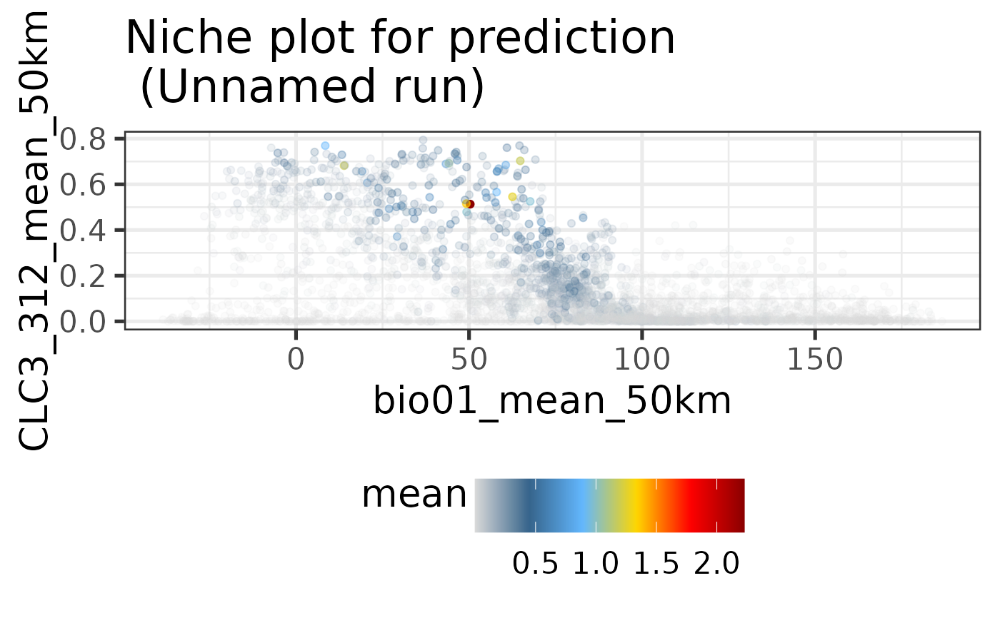

The suitability of any given area for a biodiversity feature can in
many instances be complex and non-linear. Visualizing obtained suitability
predictions (e.g. from train()) against underlying predictors might help
to explain the underlying gradients of the niche.
Supported Inputs for this function are either single trained ibis.iSDM
DistributionModel objects or alternatively a set of three SpatRaster objects.
In both cases, users can specify "xvar" and "yvar" explicitly
or leave them empty. In the latter case a principal component analysis (PCA)
is conducted on the full environmental stack (loaded from DistributionModel
or supplied separately).
Usage
nicheplot(
mod,
xvar = NULL,
yvar = NULL,
envvars = NULL,
overlay_data = FALSE,
plot = TRUE,
fname = NULL,
title = NULL,
pal = NULL,
...
)
# S4 method for class 'ANY'
nicheplot(
mod,
xvar = NULL,
yvar = NULL,
envvars = NULL,
overlay_data = FALSE,
plot = TRUE,
fname = NULL,
title = NULL,
pal = NULL,
...
)Arguments
- mod
A trained
DistributionModelor alternatively aSpatRasterobject withpredictionmodel within.- xvar
A
characterdenoting the predictor on the x-axis. Alternatively aSpatRasterobject can be provided.- yvar
A
characterdenoting the predictor on the y-axis. Alternatively aSpatRasterobject can be provided.- envvars
A
SpatRasterobject containing all environmental variables. Only used ifxvarandyvaris empty (Default:NULL).- overlay_data
A
logicalon whether training data should be overlaid on the plot. Only used forDistributionModelobjects (Default:FALSE).- plot
A
logicalindication of whether the result is to be plotted (Default:TRUE)?- fname
A
characterspecifying the output file name a created figure should be written to.- title
Allows to respecify the title through a
character(Default:NULL).- pal
An optional
vectorwith continuous custom colours (Default:NULL).- ...
Other engine specific parameters.
Examples
# Make quick prediction
background <- terra::rast(system.file('extdata/europegrid_50km.tif',
package='ibis.iSDM',mustWork = TRUE))
virtual_points <- sf::st_read(system.file('extdata/input_data.gpkg', package='ibis.iSDM'), 'points',quiet = TRUE)
ll <- list.files(system.file('extdata/predictors/',package = 'ibis.iSDM',mustWork = TRUE),full.names = TRUE)
# Load them as rasters
predictors <- terra::rast(ll);names(predictors) <- tools::file_path_sans_ext(basename(ll))
# Add GLM as an engine and predict
fit <- distribution(background) |>
add_biodiversity_poipo(virtual_points, field_occurrence = 'Observed',
name = 'Virtual points',docheck = FALSE) |>
add_predictors(predictors, transform = 'none',derivates = 'none') |>
engine_glm() |>
train()
#> [Setup] 2024-11-05 09:33:59.45352 | Creating distribution object...
#> [Setup] 2024-11-05 09:33:59.454446 | Adding poipo dataset...
#> [Setup] 2024-11-05 09:33:59.45976 | Adding predictors...
#> [Estimation] 2024-11-05 09:33:59.628147 | Collecting input parameters.
#> [Estimation] 2024-11-05 09:33:59.77943 | Adding engine-specific parameters.
#> [Estimation] 2024-11-05 09:33:59.783505 | Engine setup.
#> [Estimation] 2024-11-05 09:33:59.938994 | Starting fitting: Virtual points
#> [Estimation] 2024-11-05 09:34:00.004929 | Starting prediction...
#> [Done] 2024-11-05 09:34:00.132259 | Completed after 0.5 secs
# Plot niche for prediction for temperature and forest cover
nicheplot(fit, xvar = "bio01_mean_50km", yvar = "CLC3_312_mean_50km" )
